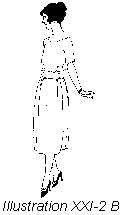
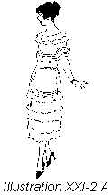
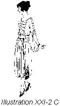

1926—The New-Way Course in Fashionable Clothes-Making
Lesson 21—The Dress Form
The Dress Form
The value of the dress form to the home clothes-maker is inestimable. It saves her many long hours of tedious standing. It enables her to achieve a perfect-fitting gown with only one fitting. When used correctly, it saves a great deal of work and trouble. And not only is it valuable in the cutting and fitting of clothes, but it materially simplifies the study of design which you will take up in a later lesson.
The dress form is necessarily smaller than the person for whom it is intended and must be padded in order to be made perfect. If the form were the same bust measure as the person for whom it is to be used, other parts of the form would be too large and no part of the form would be pliable. For this reason, it is necessary to make a lining to fit the figure perfectly. This lining is placed on the form and it is then padded to the proper size. In this manner the form is also made a little pliable. The making of the lining to be used with the dress form is taught in the next lesson.
In connection with this lesson on the dress form, you are going to learn the important new principle of adaptive dressmaking. It is really a very simple principle, but through its application you are able to select any style you wish—whether you are short or tall, stout or thin—and so adapt it to your own figure that it will be individually becoming.
Use of the Form in Adaptive Dressmaking (Illustrations XXI-I and 2)
But why, you ask, is adaptive dressmaking taught in a lesson devoted to the use of the dress form. It is largely through the dress form that this new kind of dressmaking is made possible. The form enables you to see on a figure just how the dress is going to look on you. Certain little touches can be added that change the very outline of the frock or skirt—yet these changes would probably never have been deemed necessary if the form hadn't revealed them. As a matter of fact, the dress form plays the same part in adaptive dressmaking as the shadow of your own figure, the silhouette, played in the study of line, color and harmony in Book II.
Let us assume, for instance, that a certain style of dress must be cut lengthwise of the material.
Let us pretend, for instance, that a certain style of dress appeals to you, but you know that the ruffled skirt or the wired sides will not be becoming. With your dress form as a foundation to work from, you can use the same style yet eliminate the ruffles or the wired effect and add a little trimming touch of your own—one you know will be becoming to your type of figure.
Glance at the two squares below. Both are exactly two inches square yet one appears to be considerably wider than the other. Surely the square in which the lines are vertical appears longer—you can see that at a glance. It is through application of this principle of vertical and horizontal lines that adaptive dressmaking is made possible.
Adapting Styles to Your Figure
Illustration A shows a very pretty little frock which boasts as trimming plaited ruffles running horizontally around the skirt. The woman who is stout knows, of course, that these ruffles will never do—the two squares explain why. But the dress appeals to her otherwise—and she would like to have it. So she makes the dress without the ruffles—as illustrated in B.
With her inherent love of beauty, the woman who is making the dress realizes that something is lacking, some distinctive trimming touch. What will be most appropriate, most becoming? It is here that the value of the dress form is most strikingly illustrated. The dress is slipped over the dress form, enabling the woman to visualize exactly how it is going to look on her, and delightful trimming ideas immediately suggest themselves. Perhaps simulated panels made with inserts of plaited ruffles would be pretty. Perhaps braid or buttons would be attractive. She experiments with pins and basting threads, until the form shows her that the use of plain straight panels, with perhaps just a touch of braiding at the bottom, is most appropriate and becoming. The finished dress finally is made as illustrated in C.
In this manner, any style of dress can be adapted to the individual figure. Any dress can be made becoming, smart, attractive. Remember the laws of line and harmony, remember the secret of the silhouette and how certain lines and colors conform with your own lines and coloring—then with your dress form practice the art of adaptive dressmaking—and you will always, at all times, make dresses that are fashionable, pretty and becoming.